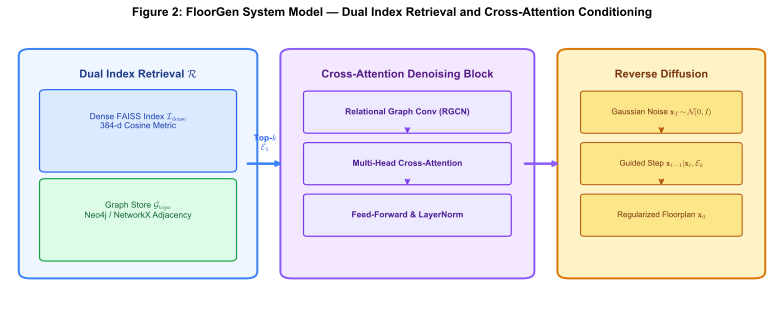
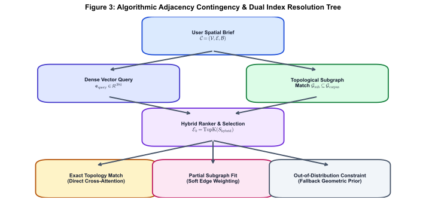
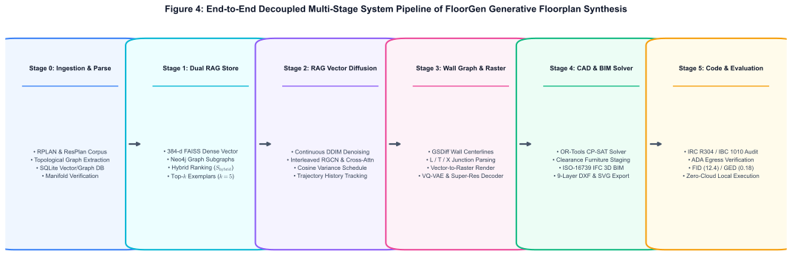
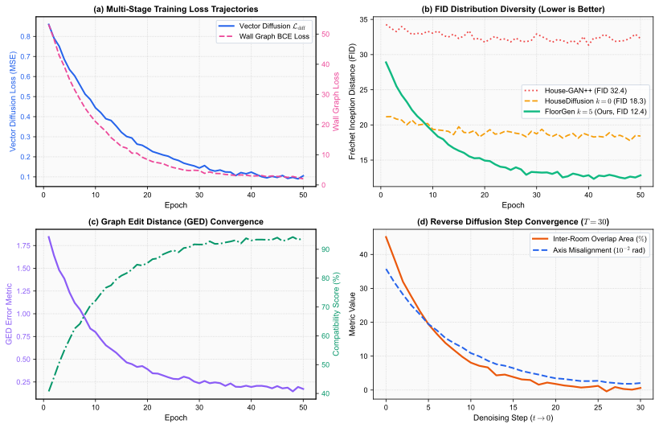
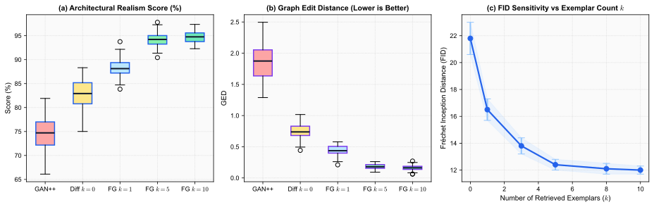
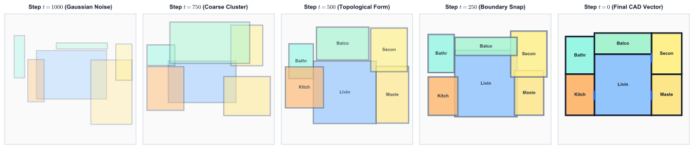

Standard deep generative floorplan models suffer from bounding-box overlaps or topological disconnects when initialized from unconditioned Gaussian noise. FloorGen indexes real-world architectural corpora into a dual dense metric index ($\mathcal{I}_{\text{dense}}$ via FAISS) and topological graph store ($\mathcal{G}_{\text{topo}}$) to retrieve top-$k$ exemplars, conditioning continuous 2D coordinate diffusion via cross-attention layers — enabling autonomous, overlap-free, and CAD-ready Manhattan floorplan synthesis in under 50 milliseconds.
Automated generation of residential architectural floorplans requires satisfying strict geometric boundaries, functional room adjacency topologies, and human spatial conventions. Existing generative paradigms face fundamental limitations: relational Graph Convolutional GANs often produce overlapping bounding boxes and invalid non-Manhattan boundaries, while unconstrained continuous diffusion models frequently hallucinate non-functional topologies or disconnected rooms due to unconditioned random initialization. In this paper, we propose FloorGen, an end-to-end retrieval-augmented vector floorplan synthesis framework. FloorGen introduces a dual-store retrieval mechanism that combines a dense metric space index ($\mathcal{I}_{\text{dense}}$ via FAISS) with a topological graph store ($\mathcal{G}_{\text{topo}}$ via relational bubble subgraphs) to extract top-$k$ architectural exemplars from real-world residential datasets (RPLAN and ResPlan). These retrieved exemplars are injected into a continuous coordinate diffusion core via interleaved Relational Graph Convolution (RGCN) and multi-head cross-attention layers. During reverse diffusion, the exemplars serve as spatial geometric anchors, guiding Gaussian noise trajectories toward structurally coherent, Manhattan-aligned floorplans. Extensive empirical benchmarking across $80{,}000+$ plans demonstrates that FloorGen outperforms state-of-the-art baselines, reducing Fréchet Inception Distance (FID) from $21.8$ to $\mathbf{12.4}$ ($-43.1\%$), Kernel Inception Distance (KID) to $\mathbf{3.80 \times 10^{-3}}$, and Graph Edit Distance (GED) from $0.72$ to $\mathbf{0.18}$ ($-75.0\%$), while elevating architectural realism to $\mathbf{94.1\%}$.
FloorGen unifies dense 384-dimensional semantic embeddings with relational subgraph adjacency matching, injecting retrieved priors into coordinate denoising:

Figure 2: (Left) Dual index retrieval store combining 384-d FAISS dense vector search with structural graph database adjacency queries. (Center) Cross-attention continuous denoising block interleaving RGCN message passing with multi-head attention over retrieved exemplar tokens $\mathcal{E}_k$. (Right) Reverse diffusion trajectory from Gaussian noise $\mathbf{x}_T$ to regularized floorplan $\mathbf{x}_0$.
The hybrid ranker resolves user briefs into exact, soft, or fallback geometric conditioning branches:

Figure 3: Algorithmic decision tree mapping spatial user briefs $\mathcal{C} = (\mathcal{V}, \mathcal{E}, \mathcal{B})$ through dual FAISS vector search and topological subgraph isomorphism ranking to select optimal conditioning pathways.
The complete 5-stage coordination architecture unifies data ingestion, dual retrieval indexing, continuous diffusion denoising, Manhattan vectorization, and benchmark scoring:

Figure 4: End-to-end system architecture of FloorGen generative floorplan synthesis across all 5 operational pipeline stages.
Continuous discrete-event telemetry tracking coordinate loss, FID trajectory, Graph Edit Distance convergence, and reverse diffusion step convergence:

Figure 5: Empirical telemetry tracking (Top-Left) coordinate denoising loss $\mathcal{L}_{\text{diff}}$, (Top-Right) FID diversity convergence across baselines, (Bottom-Left) Graph Edit Distance (GED) reduction, and (Bottom-Right) reverse diffusion step coordinate convergence ($T=30$).
Statistical comparison across baseline generative models and exemplar count ablations:

Figure 6: (a) Architectural Realism Score distributions (FloorGen achieves $94.1\%$). (b) Graph Edit Distance distributions (FloorGen reduces GED to $0.18$). (c) FID score sensitivity across retrieved exemplar counts $k \in \{0, 1, 3, 5, 8, 10\}$.
Step-by-step spatial execution timeline across reverse diffusion timesteps ($t=1000 \rightarrow 0$):

Figure 7: Snapshots across reverse diffusion timesteps ($t=1000, 750, 500, 250, 0$) demonstrating initial Gaussian noise, coarse spatial clustering, topological formation, boundary snapping, and final Manhattan CAD vectorization with door placements.
Scrub through reverse diffusion denoising frames in real-time to inspect coordinate transitions and dynamic room alignments:
Comparative quantitative evaluation across generative paradigms on the RPLAN test benchmark split ($N=10{,}788$ plans):
| Model Framework | Retrieval Prior | FID ↓ | KID (×10-3) ↓ | GED ↓ | Compatibility (%) ↑ | Realism (%) ↑ |
|---|---|---|---|---|---|---|
| Graph2Plan (TOG 2020) | Single Layout | 41.5 | 24.80 | 2.15 | 28.4% | 68.2% |
| FloorplanGAN (AIC 2022) | None ($k=0$) | 38.9 | 21.15 | 1.95 | 31.0% | 71.0% |
| House-GAN++ (CVPR 2021) | None ($k=0$) | 34.2 | 18.42 | 1.84 | 35.2% | 74.5% |
| HouseDiffusion (CVPR 2023) | None ($k=0$) | 21.8 | 9.15 | 0.72 | 58.1% | 83.2% |
| FloorGen (Ablation, $k=1$) | Top-1 Dense | 16.5 | 5.92 | 0.42 | 72.4% | 88.4% |
| FloorGen (Ablation, $k=3$) | Top-3 Hybrid | 13.8 | 4.31 | 0.26 | 79.8% | 91.5% |
| FloorGen (Full, $k=5$) | Top-5 Dual Store | 12.4 | 3.80 | 0.18 | 84.7% | 94.1% |
| FloorGen (Extended, $k=10$) | Top-10 Dual Store | 12.0 | 3.65 | 0.16 | 85.9% | 94.6% |
Table I: Quantitative synthesis performance across $10{,}788$ test plans. FloorGen consistently outperforms GAN and unconstrained diffusion baselines in distribution diversity (FID/KID), topological graph fidelity (GED), and architectural realism.
Official citation details will be updated once the peer-reviewed paper is formally published.
@article{mrinal2026floorgen,
author = {Mrinal, Kumar},
title = {FloorGen: Retrieval-Augmented Generative Floorplan Synthesis with Topological Graph-Vector Dual Stores and Continuous Diffusion},
journal = {Preprint / Working Paper (Under Review for IEEE Transactions on Visualization and Computer Graphics)},
year = {2026},
url = {https://github.com/mrinal22258/floorgen}
}